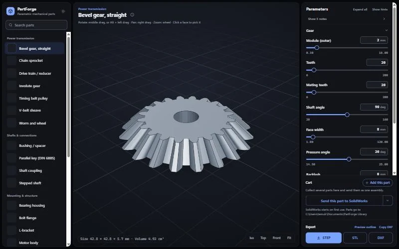
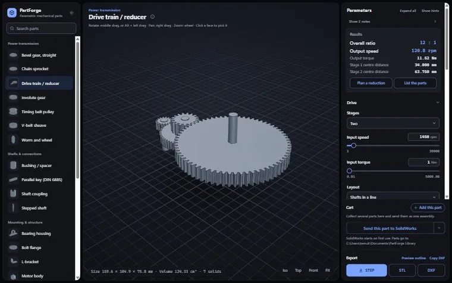
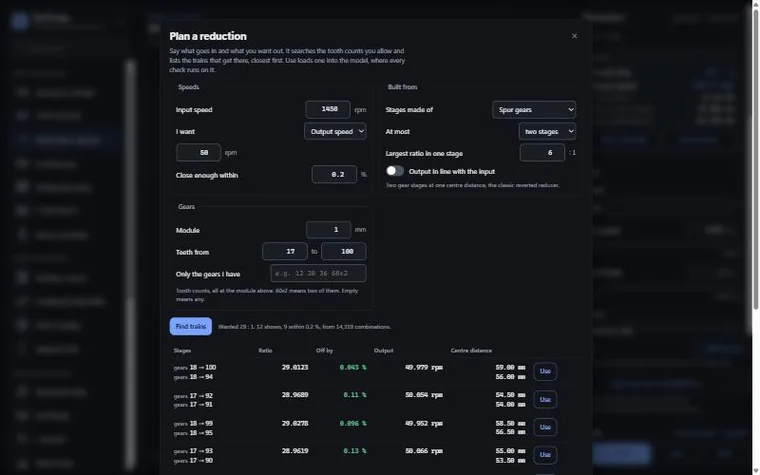
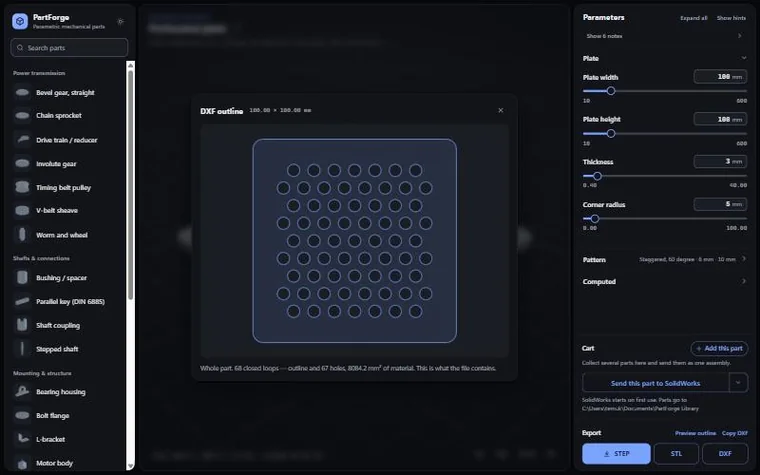
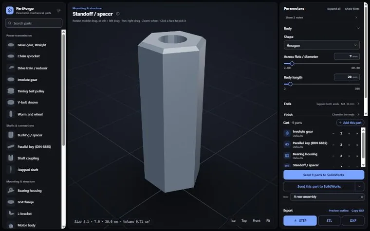

Projects / PartForge
Software for engineering · solo project
PartForge
A browser tool that turns the parts an engineer draws over and over (involute gears, timing pulleys, bearing housings, DIN 6885 keys) into something you configure instead of model. It builds exact B-rep geometry, warns about undercut teeth or walls too thin to machine, and exports STEP, STL or DXF.

Why I built it
Standard parts are defined by standards, not by design decisions. A 31-tooth involute gear is a tooth form with three interesting inputs: the module, the tooth count and the bore. The same goes for a timing pulley groove, a chain sprocket, an O-ring gland or a NEMA motor plate. Modelling them by hand is slow and repetitive, and a slip while copying a table of standard dimensions is the kind of error that survives all the way to a machined part.
PartForge is the tool I wanted while designing competition robots: you configure the part instead of modelling it.
How it works
Each part is one Python file that declares its parameters and builds its solid with build123d on the OpenCascade kernel, so the result is exact B-rep geometry, not a mesh. The interface is generated from that declaration, which means adding a part is a matter of writing geometry, not UI. There are 25 generators in five families: power transmission, shafts and connections, mounting and structure, motion and sealing, and fluid parts.
Parts that answer back
Each generator checks what it builds and reports the actual number and the fix. It knows that the DIN 6885 key for a 10 mm shaft is 3 × 3 mm at 1.8 mm depth, and that an ISO 286 H7 bore of 10 mm is +0.000 / +0.015. It warns that eleven teeth at a 20° pressure angle will undercut and roughly how much profile shift corrects it, that a wall is too thin to machine, or that a spring will buckle before it reaches solid height.
Designing a whole reduction
The drive train generator designs the assembly, not just one gear. Ask it to reduce 1450 rpm to 50 rpm and it searches the tooth counts you are willing to use (14,319 combinations in under two seconds), then lists the trains that land closest, each with its real ratio, error, output speed and centre distances. Load one and it builds every gear meshed at the right centres, as an assembly you can export.
Getting parts into CAD
- STEP with metadata: every parameter and computed dimension travels as a custom property, so it reaches the bill of materials.
- SolidWorks: a bridge drives the running session over COM. It imports the part, stamps its properties, saves it and inserts it into the open assembly.
- Fusion 360: Fusion cannot be driven from outside, so the tool writes a hand-off file that an add-in collects from inside Fusion.
- Laser cutter software (RDWorks): it has no automation at all and runs elevated, so Windows blocks simulated input. The tool puts the DXF on the clipboard instead, which an elevated program can still read.
Runs in the browser
The same generators also run entirely on the client through Pyodide and OCP.wasm. The published build does real CAD in a browser, including on a phone, with nothing to install and no server.
Standards built in
DIN 6885 parallel keys, ISO 286 H7 fits, ISO 606 and ANSI roller chain, NEMA frames 8 to 42, fourteen belt profiles (HTD, GT2, AT5, T and MXL families), AS568 O-ring sections, and metric coarse threads with tap and clearance drills.
Testing
A test suite builds every generator across its parameter range and exports all three formats. Each case runs in its own subprocess, so one runaway build cannot stop the rest.
Screenshots



